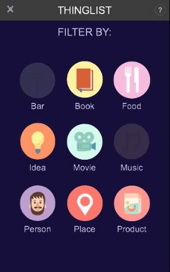

GL UI, response HTML UI
The GL UI toolkit, is a study about how to implement responsives HTML UI using WebGL.

 Designing a responsive HTML UI with nice animations and that can run with the same performance on almost all devices, is still a big challenge. From my perspective the main problems are:
Designing a responsive HTML UI with nice animations and that can run with the same performance on almost all devices, is still a big challenge. From my perspective the main problems are:
The HTML DOM does not fit with the UI development requirements
The developer have very poor control on how / when the rendering will be done
The rendering performances still depend a lot on the vendor, specially on Android Devices (but that’s changing)
The idea of this study is to create a UI Engine based on WebGL.
Why a new UI Engine:
This new toolkit will propose a DOM with a better API for UI development
Because we control the rendering process, the UI Engine will offer to the developer all methods he need to know what happening. For instance methods such as viewDidRender, animationWillStart, animationDidEnd, animationDidStop, etc.
Why WebGL:
WebGL become more and more popular and it’s quite well supported on most of devices.
WebGL is a low level graphic API, and it offers all mechanism and flexibility for implementing fast and efficient algorithms
I’ve written some notes that explain this engine (it’s quite draft and does not explain everything) on Google Doc.